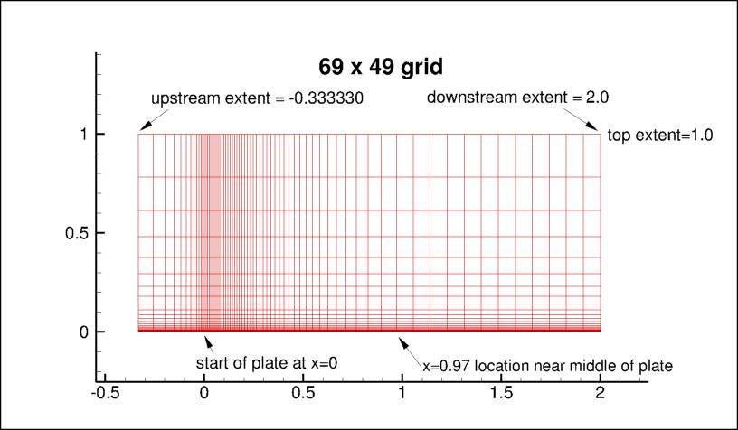

Public Access (formerly Langley Research Center)Turbulence Modeling Resource |
Return to: 2D Zero Pressure Gradient Flat Plate Verification Case Intro Page
Return to: Turbulence Modeling Resource Home Page
Grids - 2D Zero Pressure Gradient Flat Plate Verification Case
A series of 5 nested 2-D grids are provided.
Each coarser grid is exactly every-other-point
of the next finer grid, ranging from the finest 545 x 385 to the coarsest 35 x 25 grid.
The finest grid has minimum spacing at the wall of y=5 x 10-7, giving an approximate average
y+=0.1 over the plate at the Reynolds number run.
Even the coarsest grid has reasonably fine wall-normal spacing, giving an approximate average
y+=1.7 over the plate. The grid is stretched in the wall-normal direction, and is also clustered
near the plate leading edge. The following figure shows the 69 x 49 grid (the location x=0.97,
where several quantities are later looked at, is pointed out in the figure):

Note: be sure to use double precision when reading the grids!
STRUCTURED VERSIONS OF GRIDS
PLOT3D Files
The structured PLOT3D grids are given in two different ways, as 2-D grids (x-y plane) or as 3-D grids (two
identical x-z planes, separated by a distance y=1,
giving one spanwise cell for all grid levels). You may use whichever is more convenient for your particular
application.
Format for the structured 2D grids is PLOT3D-type, formatted, MG, 2D (nbl=1) - note that you
must use double precision when reading! :
read(2,*) nbl
read(2,*) (idim(n),jdim(n),n=1,nbl)
do n=1,nbl
read(2,*) ((x(i,j,n),i=1,idim(n)),j=1,jdim(n)),
+ ((y(i,j,n),i=1,idim(n)),j=1,jdim(n))
enddo
Download the 2-D version of the grids in PLOT3D format here:
Format for the structured 3D grid is PLOT3D-type, formatted, MG, 3D (nbl=1, and idim in this case is 2) - note that you must use double precision when reading! :
read(2,*) nbl
read(2,*) (idim(n),jdim(n),kdim(n),n=1,nbl)
do n=1,nbl
read(2,*) (((x(i,j,k,n),i=1,idim(n)),j=1,jdim(n)),k=1,kdim(n)),
+ (((y(i,j,k,n),i=1,idim(n)),j=1,jdim(n)),k=1,kdim(n)),
+ (((z(i,j,k,n),i=1,idim(n)),j=1,jdim(n)),k=1,kdim(n))
enddo
Download the 3-D version of the grids in PLOT3D format here:
If desired, example Neutral Map Files associated with 3-D version of the grids are given here (these files specify grid indices associated with each boundary condition - see The Neutral Map File):
CGNS Files
The structured grids are also available as CGNS files (3-D versions only, with two identical x-z planes, separated by a distance y=1, giving one spanwise cell for all grid levels). Note that the BCs written inside the CGNS files are for guidance only, and may not reflect the appropriate BCs needed for your application. To read/write CGNS files, (free) software may be necessary if your pre/post-processing tools do not already handle it. See: CGNS Website for details.
Download the 3-D version of the grids in CGNS format (gzipped) here:
UNSTRUCTURED VERSIONS OF GRIDS
CGNS and AFLR3 Files
The unstructured versions of the same grids are all given as CGNS and AFLR3 (UGRID) files. Note that the BCs written inside these files are for guidance only, and may not reflect the appropriate BCs needed for your application. To read/write CGNS files, (free) software may be necessary if your pre/post-processing tools do not already handle it. See: CGNS Website for details.
The unstructured grids are all given as 3-D grids (two identical x-z planes, separated by a distance y=1, giving one spanwise cell for all grid levels). They are given two different ways: as hexahedra (quadrilaterals in the x-z plane), or cut into prisms (triangles in the x-z plane).
Download the unstructured CGNS grids (gzipped) as 3-D hexahedra (quadrilaterals in x-z plane) here:
Download the unstructured AFLR3 grids (gzipped) as 3-D hexahedra (quadrilaterals in x-z plane) here:
Download the unstructured CGNS grids (gzipped) as 3-D prisms (triangles in x-z plane) here:
Download the unstructured AFLR3 grids (gzipped) as 3-D prisms (triangles in x-z plane) here:
The following figure shows the 69 x 49 grid cut into triangles (prisms in 3-D):
Return to: 2D Zero Pressure Gradient Flat Plate Verification Case Intro Page
Return to: Turbulence Modeling Resource Home Page
Recent significant updates:
09/24/2023 - added AFLR3 (UGRID) versions of unstructured grids
Page Curators: Christopher Rumsey,
Ethan Vogel,
Clark Pederson
Last Updated: 02/10/2025